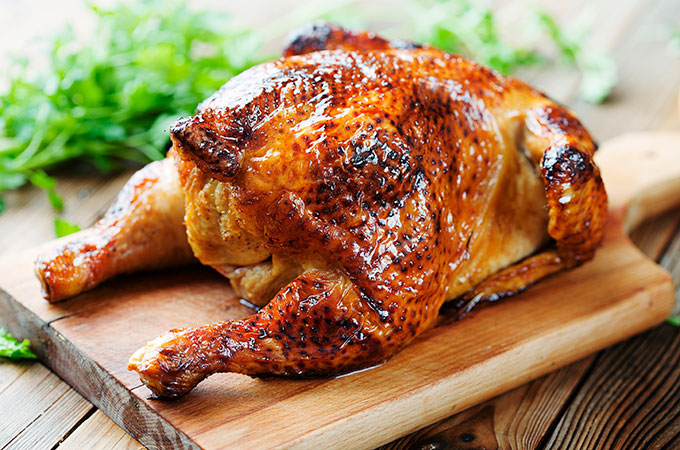

Isa's Roasted Chicken Dinner

Golden, crisp, and full of savory flavor, roasted chicken is a timeless comfort-food classic.
Slow-roasted until the skin is perfectly browned and the meat is tender and juicy, every bite is rich and
satisfying. Whether served for a family dinner or special gathering, this simple dish proves that
great ingredients make unforgettable meals
Ingredients
Chicken
- One 6-pound whole chicken
- Salt
- Pepper
- 5 Garlic Cloves, Crushed
- 1 Shallot, Halved
- 1 Lemon, Halved
- 1 small orange, halved
- 1 Rosemary sprig
Glaze
- 1/2 Cup honey
- 1 tablespoon orange juice
- 1 tablespoon molasses
Steps
- Remove the neck and trim the excess fat and skin from the chicken. Place the chicken
breast side up, in a mesh strainer set over a sink. In a large pot, bring about 6 cups of
water to a boil. Pour half of the water over the chicken. Turn the chicken over and pour the
remaining water over it. This will tighten the skin.
- Transfer the chicken to a wire rack set on a baking sheet. Generously salt all parts
of the bird. Tie the legs together with butcher's twine. Refrigerate the chicken, uncovered, for 12-24 hours
- Preheat the oven 350F. Remove the chicken from the refrigerator and pat dry. Season all parts of the chicken with Pepper.
Stuff the chicken cavity with garlic, shallot, lemon, orange and rosemary. Place the chicken, breast side up,
back on the wire rack on the baking sheet. bake in the oven for 1 hour. Turn the Chicken over and bake for another 25 mins.
- In a small bowl, combine the ingredients for the glaze. Remove the chicken from the oven and brush the back
with the glaze. Return to the oven and bake for another 25 mins.
- Remove the chicken from the oven, turn it over, brush with the glaze, and return the
chicken to the oven. Bake for 20 mins. Brush the duck once more with the glaze and bake until the chicken
registers 160F on the meat thermometer inserted into the breast. Remove the Chicken from the oven
and wrap in aluminum foil. Let rest for 15 mins before carving.
If you'd like to see our other recipes, head back to our
Homepage